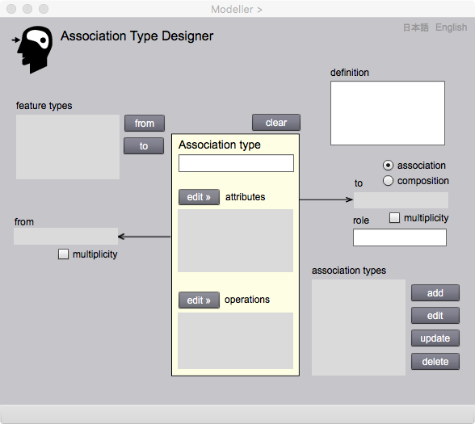

<!DOCTYPE html PUBLIC "-//W3C//DTD XHTML 1.0 Transitional//EN" "http://www.w3.org/TR/xhtml1/DTD/xhtml1-transitional.dtd">
<html xmlns="http://www.w3.org/1999/xhtml">
<head>
<meta http-equiv="Content-Type" content="text/html; charset=UTF-8" />
<title>Association Type Designer</title>
<link href="gittokCSS.css" rel="stylesheet" type="text/css" />
</head>

<body>
<p class="FirstHeader">Association Type Designer</p>
<p class="secondHeader">Introduction</p>
<p class="mainSentence">There are various kinds of relationships between features. For example, geometric and topological relationships such as disjoint and inclusion, and temporal relationship such as before and after. They are relationships between attributes of features. Parent and child relationship is the conceptual relationship between more abstract feature and more concrete features. For example,  'vegetation area' is a special 'area' on the ground. An area may have a properties  such as an extent and a vegetation area has an extent and its inherent properties such as classification of vegetation. It means the child feature inherits properties of the parent feature. </p>
<p class="mainSentence">Association Type Designer is used to design relationships without inheritance. Inheritance is defined in Feature Type Designer.. Relationships without inheritance is called association. According to gittok GFM, association is the relationship between a from-feature to a to-feature. A from-feature links a to-feature through association, while a to-feature is linked bya from-feature through association. For example, School links Building through an association called for example BelongingBuildings. The roll of such a building is a 'school building'.</p>
<p class="mainSentence">Association is similar to feature. It is also abstraction of real world phenomena. It may have attributes and operations. However in gittok, association cannot have inheritance relationship to keep its structure simple. </p>
<p class="mainSentence">There is an unique association called composition. Under composition, to-features are erased simultaneously when the from-feature is eliminated. For example, rooms disappear simultaneously when the building is destroyed. A to-feature by the composition shall not be a to-feature of other from-feature. Because, it will be difficult to erase the to-feature.</p>
<p class="mainSentence">In the text of UML, one can find association called an aggregation. However in gittok, we assume aggregation is same as usual association, because there is no big difference from the view point of data implementation.</p>
<p class="secondHeader">Association Type Designer</p>
<p class="mainSentence"></p>
<p class="mainSentence">Figure 1. Page for association type design</p>
<p class="thirdHeader">FIELDS</p>
<p class="mainSentence"><strong>feature types (selectable)</strong><br />
  The feature types defined by Feature Type Designer are shown in this list. From- feature type and to-feature type are assigned after the feature selection in this list.</p>
<p class="mainSentence"><strong>from</strong><br />
  From-feature type name is shown here.</p>
<p class="mainSentence"><strong>to</strong><br />
  To-feature type name is shown here.</p>
<p class="mainSentence"><strong>association type (editable)</strong><br />
  Association type name is shown here, For addition or editing of the association type, the name is keyed-in here.</p>
<p class="mainSentence"><strong>definition (editable)</strong><br />
  The definition of the association type is keyed-in here.</p>
<p class="mainSentence"><strong>attributes</strong><br />
  Attribute type names are listed here.</p>
<p class="mainSentence"><strong>operations</strong><br />
  Operation type names are listed here.</p>
<p class="mainSentence"><strong>role (editable)</strong><br />
  Role name of to-feature is shown here. For addition or editing of the association type, the roll name is keyed-in here.</p>
<p class="mainSentence"><strong>association types (selectable)</strong><br />
  Association type names are shown after addition and editing of the asociation types. Target association type shall be selected before editing.</p>
<p class="thirdHeader">BUTTONS</p>
<p class="mainSentence"><strong>from</strong><br />
  The feature type selected in feature types list will be a from-feature by clicking this button.</p>
<p class="mainSentence"><strong>to</strong><br />
  The feature type selected in feature types list will be a to-feature by clicking this button.</p>
<p class="mainSentence"><strong>edit attributes</strong><br />
  Attribute Type Designer appears by clicking this button.</p>
<p class="mainSentence"><strong>edit operations</strong><br />
  Operation Type Designer appears by clicking this button.</p>
<p class="mainSentence"><strong>association / composition</strong><br />
  usual association or composition is selected by clicking one of the radio buttons.</p>
<p class="mainSentence"><strong>multiplicity</strong><br />
  If to-feature instance is more than one, this check box shall be checked.</p>
<p class="mainSentence"><strong>add</strong><br />
  New association type is stored in gittok by clicking this button. It is impossible to store is the type with the same name was already stored.</p>
<p class="mainSentence"><strong>edit</strong><br />
  The association type selected in association types list can be edited by clicking this button.</p>
<p class="mainSentence"><strong>update</strong><br />
  The association type under editing can be updated by clicking this button.</p>
<p class="mainSentence"><strong>delete</strong><br />
  The association type selected in the association types list is eliminated by clicking this button.</p>
<p class="mainSentence"><strong>日本語</strong><br />
  今あなたが読んでいるドキュメントが表示されます．</p>
<p class="mainSentence"><strong>English</strong><br />
  You can read the tutorial written in English.</p>
<p class="FirstHeader">&nbsp;</p>
</body>
</html>
